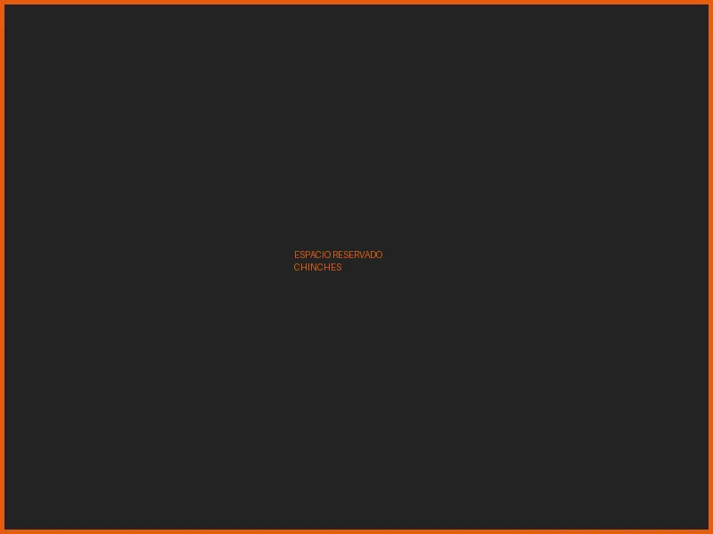
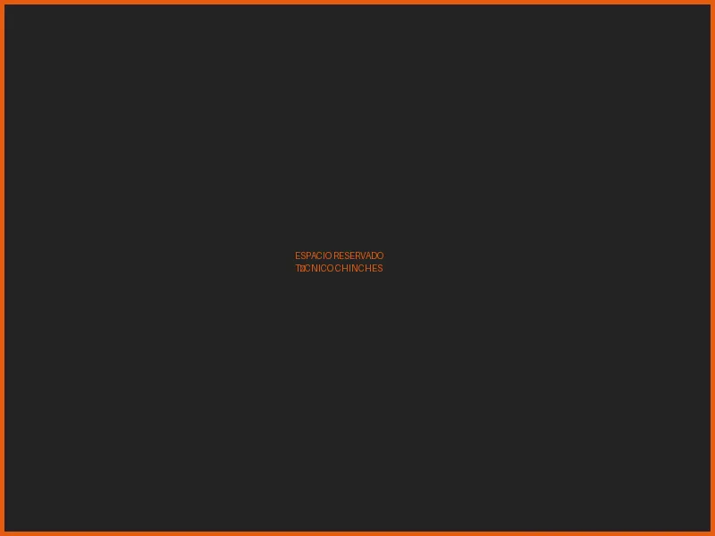

Las chinches no son solo un problema de higiene — afectan tu descanso, tu salud mental y tu bienestar · Tratamiento profesional que elimina adultos, ninfas y huevecillos · Sin tirar tus colchones
Las chinches de cama (Cimex lectularius) son maestras del escondite. De día se ocultan en costuras de colchones, hendiduras del bastidor, zócalos y detrás de cuadros. De noche salen a alimentarse de sangre humana mientras duermes.
Llegaron a tu hogar escondidas en maletas, ropa de segunda mano, muebles usados o ropa de cama de hotel. Una sola hembra puede poner entre 200 y 500 huevecillos a lo largo de su vida — la infestación crece exponencialmente si no actúas a tiempo.


No hay que tirar tus colchones. Nuestro tratamiento dirigido penetra en todos los refugios de las chinches sin dañar tus muebles ni ropa de cama.
Usamos una combinación de aspersión residual en superficies clave y polvo insecticida en grietas y hendiduras. Ambos productos aprobados por COFEPRIS, de baja toxicidad y sin olor agresivo.
Nos llamas o escribes. Te hacemos una pequeña encuesta para entender el alcance del problema y las áreas afectadas.
Agendamos una visita técnica. Nunca aplicamos sin inspeccionar primero — revisamos colchón, bastidor, cabecero, zócalos y muebles para mapear todos los refugios.
Presentamos una cotización y explicamos qué áreas trataremos, qué productos usaremos y si se requiere una segunda sesión.
Aspersión residual en superficies y polvo insecticida en grietas. Tratamiento total en colchón, bastidor, cabecero y pared — sin tirar el colchón.
Te indicamos el tiempo de reventada, cómo ventilar correctamente el cuarto y qué no hacer para no reducir la efectividad del tratamiento.
Si el nivel de infestación lo requiere, agendamos una visita de continuidad. La garantía es válida cuando sigues las instrucciones del técnico.
Las chinches interrumpen el sueño, generan estrés crónico y pueden causar anemia en casos severos. Nuestro compromiso es su salud — tratamos la causa, no solo los síntomas.
Nunca aplicamos sin inspeccionar primero. Agendamos una visita técnica para mapear todos los refugios y definir el tratamiento correcto antes de cotizar.
Garantiza que usamos productos y procedimientos avalados por COFEPRIS. Para hoteles y hospedajes, podemos expedir Certificado de Fumigación con validez oficial.
Nuestro tratamiento dirigido elimina adultos, ninfas y huevecillos in situ. No necesitas gastar en muebles nuevos para resolver el problema.
No. Tirar el colchón es un gasto innecesario que además puede propagar la infestación a otras áreas o incluso a los vecinos. Nuestro tratamiento dirigido elimina las chinches directamente en el colchón, bastidor y zonas adyacentes sin necesidad de desecharlo.
Las chinches son excelentes viajeras. Las rutas de entrada más comunes son: maletas o bolsas después de hospedarse en un hotel, ropa o muebles de segunda mano, visitas de personas con infestación en casa, o mudanzas con objetos contaminados. No tienen que ver con limpieza o higiene del hogar — pueden aparecer en cualquier vivienda.
El tratamiento de una habitación toma aproximadamente 45 minutos a 1 hora. Después del servicio te pedimos esperar entre 2 y 4 horas antes de regresar al área tratada. Te indicamos exactamente qué hacer (ventilar, no barrer las superficies tratadas, etc.) para maximizar la efectividad.
Depende del nivel de infestación. En casos leves o moderados, una sola sesión es suficiente. En infestaciones severas o en varias habitaciones, recomendamos dos sesiones separadas por 10–15 días para asegurarnos de eliminar también los huevecillos que eclosionan después del primer tratamiento.
Las chinches no transmiten enfermedades infecciosas documentadas, pero su impacto en la salud es real: sus picaduras causan ronchas, picazón intensa y reacciones alérgicas en personas sensibles. Lo más importante es el daño a la salud mental — el estrés crónico, la ansiedad y la falta de descanso sostenida tienen consecuencias físicas serias. En casos de exposición prolongada puede presentarse anemia. Para nosotros, esto es un problema de salud que merece atención profesional urgente.
Te enviamos instrucciones específicas al confirmar el servicio. En general: lavar y secar en calor alto la ropa de cama el día anterior, despejar el acceso al colchón y bastidor, guardar juguetes y artículos personales de la cama, y retirar mascotas y personas del área durante el tratamiento.
Llámanos hoy. Evaluamos tu caso, te damos un precio exacto y agendamos el servicio. Sin rodeos, sin compromiso.